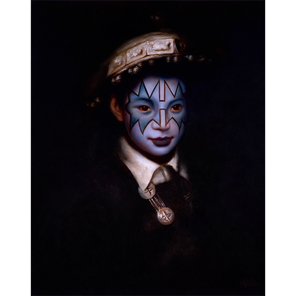
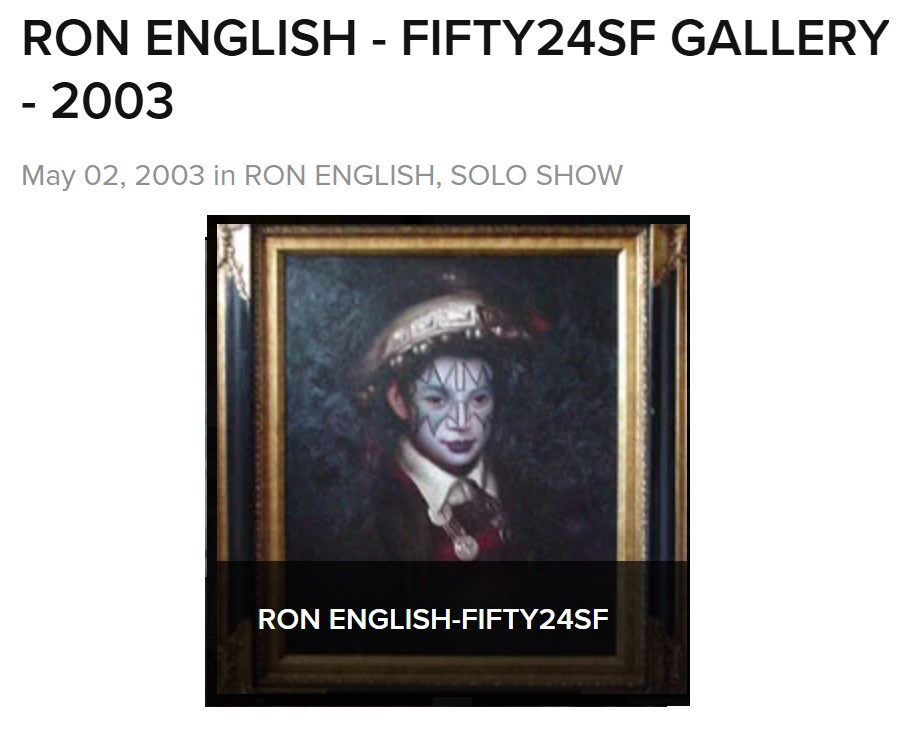

Exhibitions
Ron English, FIFTY24SF Gallery (Upper Playground), San Francisco, California, US, May 2, 2003. Solo exhibition presented with Upper Playground.
Notes
This work appears on FIFTY24SF Gallery’s archive page for Ron English’s 2003 solo exhibition, available here, accessed April 19, 2026.
Ancillary Documentation
